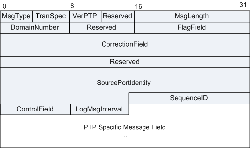

IEEE 1588v2协议附录D定义了1588V2 over IPv4的报文封装，附录E定义了1588V2 over IPv6的报文封装，附录F定义了1588v2 over IEEE 802.3 /Ethernet的报文封装。其他如1588v2 over MPLS封装，业界还没有成熟的标准。除此之外，在实际应用中还可能携带VLAN。
以太封装的PTP (Precision Timing Protocol)报文，其帧头中以太类型值=0x88F7。
IPv4封装PTP报文，EVENT消息头的UDP目的端口号是319，General消息的UDP目的端口号是320。
1588v2消息必须包含消息头、消息体和消息扩展字节，扩展字节长度可能为0。
| 字段 | 长度 | 含义 |
|---|---|---|
| TranSpec | 4比特 | 传送相关。
|
| MsgType | 4比特 | 表示消息类型。1588V2消息分为两类：事件消息（EVENT Message）和通用消息（General Message）。事件报文是时间概念报文，进出设备端口时需要打上精确的时间戳，而通用报文则是非时间概念报文，进出设备不会产生时戳。类型值0~3的为事件消息，8~D为通用消息。
|
| Reserved | 4比特 | 保留字段。 |
| VerPTP | 4比特 | 表示1588协议的版本。 |
| MsgLength | 2字节 | PTP消息的长度，即PTP消息的全部字节数目。计入字节始于报头的第一个字节，同时包含并收尾于任何尾标的最后一个字节，或是无尾标成员时收尾于消息的最后一个字节。 |
| DomainNumber | 1字节 | 域编号，表示发送该消息时钟所属的域。 |
| Reserved | 1字节 | 保留字段。 |
| FlagField | 2字节 | 标志域。取值请参见表2。 |
| CorrectionField | 64比特 | 修正域，各报文都有，主要用在Sync报文中，用于补偿网络中的传输时延，E2E的频率同步。 |
| Reserved | 32比特 | 保留字段。 |
| SourcePortIdentity | 源端口标识符，发送该消息时钟的ID和端口号。 | |
| SequenceID | 2字节 | 序列号ID，表示消息的序列号，以及关联消息的对应关系。 |
| ControlField | 1字节 | 控制域，由消息类型决定：
|
| LogMsgInterval | 1字节 | 录入消息周期，PTP消息的发送时间间隔，由消息类型决定。 |
| PTP Specified Message Field | 变长 | PTP消息体和消息扩展字节。 |
| 字节 | 比特位 | 消息类型 | 消息名 | 说明 |
|---|---|---|---|---|
| 0 | 0 | Announce, Sync, Follow_Up, Delay_Resp | alternateMasterFlag | 如果发送侧端口处于MASTER状态，则为FALSE。 |
| 0 | 1 | Sync, Pdelay_Resp | twoStepFlag | 对于一步时钟，twoStepFlag取值要求为FALSE。对于双步时钟，twoStepFlag取值要求为TRUE。 |
| 0 | 2 | ALL | unicastFlag | 如果此消息发送到的传送层协议地址是一个单播地址，则置为TRUE。如果此消息发送到的传送层协议地址是一个多播地址，则置为FALSE。 |
| 0 | 5 | ALL | PTP profile Specific 1 | 由一个备选PTP模板定义；否则置为FALSE。 |
| 0 | 6 | ALL | PTP profile Specific 2 | 由一个备选PTP模板定义；否则置为FALSE。 |
| 0 | 7 | ALL | Reserved | 此比特保留用于实验性安全机制. |
| 1 | 0 | Announce | leap61 | - |
| 1 | 1 | Announce | leap59 | - |
| 1 | 2 | Announce | currentUtcOffsetValid | - |
| 1 | 3 | Announce | ptpTimescale | - |
| 1 | 4 | Announce | timeTraceable | - |
| 1 | 5 | Announce | frequencyTraceable | - |
| 标准 | 描述 |
|---|---|
| IEEE 1588 V2 | Precision Clock Synchronization Protocol for Networked Measurement and Control Systems |
| IEEE P1588™ D2.2 | Draft Standard for a Precision Clock Synchronization Protocol for Networked Measurement and Control Systems |